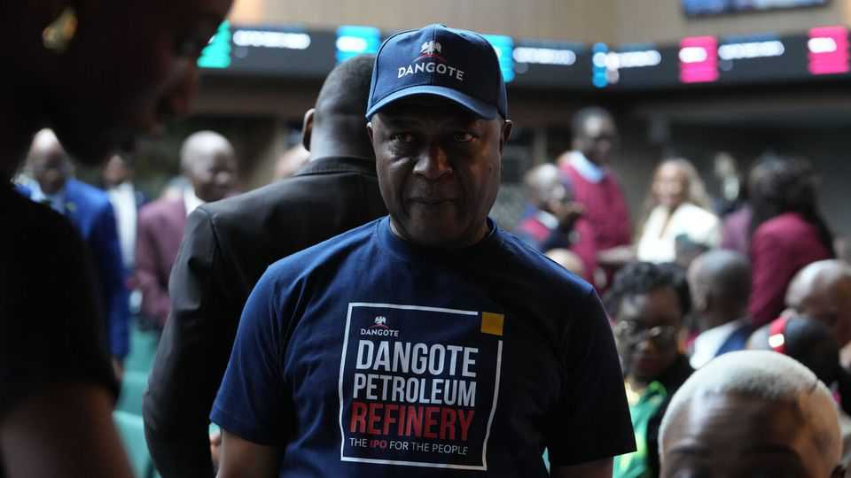

What Africa’s biggest IPO can do for its stock markets
A new generation of investors is buying up African stocks

Sep 17th 2026
ALIKO DANGOTE is the big man of African business. He is the continent’s richest tycoon, worth give or take $30bn. He has built its largest oil-refining complex, roughly half the size of Manhattan, on the outskirts of Lagos. And on September 14th he launched Africa’s biggest ever initial public offering (IPO) for Dangote Petroleum Refinery, the mega-project’s official name, hoping to raise at least $1.6bn at a valuation of nearly $50bn. If it reaches this market capitalisation when its shares begin trading on the Nigerian Exchange in November, it could instantly become one of Africa’s most valuable listed firms.
The 69-year-old Mr Dangote is giddy at the prospect. “My own driver, my mother, everybody will now come and have a stake,” he tells The Economist. So is the bourse, which has enabled retail investors in rural areas to buy the stock on mini point-of-sales terminals. “Wealth-tech” startups are advising users on how to get in on the action. TikTokers are urging Africans in the diaspora to buy in. When the IPO began, Bamboo, a popular trading app, crashed because of sky-high demand. “In future, when we are having our annual general meeting, we will hold it in a stadium,” Mr Dangote ventures.
Whether or not it fills arenas, stock-picking is certainly becoming a popular sport across Africa. Retail investors trading shares on their phones are helping lift continental stock markets. The Nigerian benchmark index is up by 71% in dollar terms this year, on a par with South Korea’s but without its artificial-intelligence bets. The Ghanaian one has increased by 50%. In March Zambia’s main index was twice what it had been a year before and has stayed near there since.
African markets were once written off as small, shallow and unpredictable. They are still puny by global standards, accounting for less than 1% of global market capitalisation. But they are becoming a bit deeper and less fickle. They have proved doubters wrong by emerging from the covid-19 pandemic in good nick and, this year, by weathering the latest Gulf war. Next to frothy valuations in many parts of the world, African stocks look affordable.
African companies have benefited from wiser economic policies in their domestic markets. Ghana has brought down inflation and removed lingering uncertainty about its currency. So has Nigeria, which has also forced banks and pension-fund managers to hold more capital. FTSE Russell, a global compiler of indices which in 2023 changed Nigeria’s status from a risky “frontier market” to a virtually uninvestable “unclassified” one, is reversing this decision. Zambia is restructuring its public debt, and is a winner from the global boom for copper, of which it has deep reserves.
Many locally listed companies are consumer-facing brands familiar to non-professional investors. MTN Nigeria, the country’s biggest mobile-phone network, swung from a loss in 2024 to a record post-tax profit of over $700m in 2025. Mr Dangote’s cement business made nearly as much. In Malawi, where some banks’ earnings were as much as doubling year on year, financial advisers took to TikTok in Chichewa (the local language) explaining how to become a “part owner” of your favourite lender.
Investing in profitable firms is pitched to savers as a smarter way to build wealth and hedge against inflation than stuffing cash under a mattress. A host of fintech startups are making such wealth-building easier. Bamboo lets its 2.3m users across Nigeria, Ghana, Kenya and South Africa invest in local and foreign stocks. In the first quarter of 2026 the platform recorded more trading in Nigerian stocks than in American ones for the first time. “The everyday Nigerians…the traders in the market…those are the customers that we are essentially building for,” says Richmond Bassey, Bamboo’s boss. The average Bamboo trade is less than $50.
These new investors bring liquidity, which, as Mr Dangote puts it, “depends on people’s participation”. Yet what makes these markets attractive to punters—the prospect of spectacular gains—also makes them volatile, and so liable to equally spectacular losses. Low-earners have the most to lose. In Malawi, where last year’s bull run in stocks ended in a 20% correction since a peak in November, the same TikTok users who had encouraged punters took to warning that investing is a “rollercoaster” and a “big boy game”.
The real liquidity will come from deep-pocketed institutional investors, perhaps including foreign ones. By listing his refinery in Nigeria rather than abroad, as many of the biggest African firms in sectors like mining and energy tend to, Mr Dangote may also attract more domestic smart money (he is thinking of a secondary listing in America, but only a few years from now). Africa’s perky economies are already doing this. Their current upswing will last a few years, reckons David Cowan of Citigroup, an American bank. After that, who knows. In the meantime, expect a stadium-like atmosphere on African bourses. ■